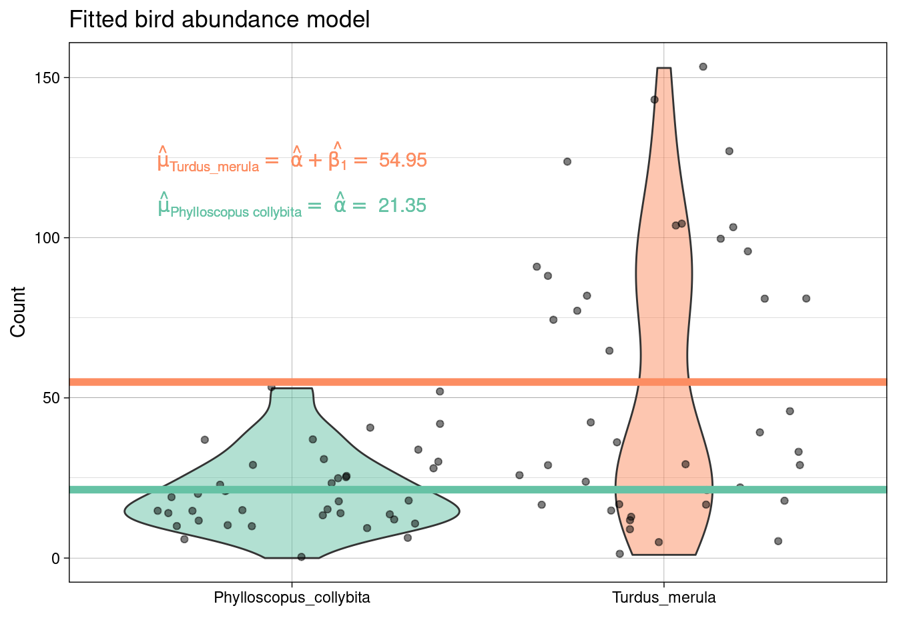

Poisson regression
Poisson regression is commonly used as a distribution for counts. It is a discrete distribution (of positive values only) and has \(\text{Var}(Y_i) = \mu_i\) (i.e., we expect the variance to increase with the mean).
If we were to assume (as previously) that \(\mu_i = \alpha + \beta_1 x_i\) then we would be allowing \(\mu < 0\), which is not supported by the Poisson distribution. So, we use a link function to map between \(\mu_i\) and the real number line:
\[\text{log}(\mu_i) = \alpha + \beta_1 x_i.\]
So, \(\mu_i \geq 0\) and \(-\infty < \text{log}(\mu_i) < \infty\); however negative the linear predictor \(\alpha + \beta_1 x_i\) gets \(\mu_i\) will always be positive.
Equivalently, \[ \mu_i = \text{exp}(\alpha + \beta_1 x_i)\]
and
\[Y_i \sim \text{Poisson}(\mu_i)\]
Interpreting coefficients
Recall, for a linear regression model \(\mu = \alpha + \beta_1x\), when \(x=0\) \(y = \alpha\) and for every one-unit increase in \(x\), \(y\) increases by amount \(\beta_1\).
For a Poisson regression model we have \(\text{log}(\mu) = \alpha + \beta_1 x.\)
We can interpret this in the same way! That is, when \(x\) is zero, the log of the expected value of the response equals \(\alpha\) and for every one-unit increase in \(x\), the log of the expected value of the response increases by amount \(\beta_1\). But interpreting the effect of \(x\) on the log of the expected value is not straightforward.
Now, we have
\[\mu = \text{e}^{ \alpha + \beta_1 x} = \text{e}^{ \alpha}(\text{e}^{\beta_1})^{ x}.\] This implies that
- when \(x = 0\) \(\mu = \text{e}^{ \alpha}(\text{e}^{\beta_1})^{0} = \text{e}^{ \alpha}\times 1 = \text{e}^{ \alpha},\)
- when \(x = 1\) \(\mu = \text{e}^{ \alpha}(\text{e}^{\beta_1})^{1} = \text{e}^{ \alpha}\text{e}^{\beta_1} = \text{e}^{ \alpha + \beta_1},\)
- when \(x = 2\) \(\mu = \text{e}^{ \alpha}(\text{e}^{\beta_1})^{2} = \text{e}^{ \alpha}\text{e}^{\beta_1} \text{e}^{\beta_1} = \text{e}^{ \alpha + \beta_1 + \beta_1},\)
- when \(x = 3\) \(\mu = \text{e}^{ \alpha}(\text{e}^{\beta_1})^{3} = \text{e}^{ \alpha}\text{e}^{\beta_1} \text{e}^{\beta_1}\text{e}^{\beta_1} = \text{e}^{ \alpha + \beta_1 + \beta_1 + \beta_1},\) and
- so on …
Therefore, for every n-unit increase in x, the expected value of the response is multiplied by \(\text{e}^{n\beta_1}.\)
Goodness-of-fit
Typically, we use Poisson regression to
- ensure the expected value is \(>0\),
- account for non-constant variance, and
- assume a discrete distribution for a discrete response.
But, how do we assess if our choice was appropriate? Use the deviance!
For a fitted Poisson regression the deviance, \(D\), is
\[D = 2 \sum^{n}_{i=1} \{ Y_{i} \log(Y_{i}/\mu_{i}) - (Y_{i}-\mu_{i}) \}\]
where if \(Y_i=0\), the \(Y_{i} \log(Y_{i}/\mu_{i})\) term is taken to be zero, and \(\mu_{i} = \exp(\hat{\beta}_{0} + \hat{\beta}_{1}X_{1} + ... + \hat{\beta}_{p} X_{p})\) is the predicted mean for observation \(i\) based on the estimated model parameters.
The deviance is a measure of how well the model fits the data. That is, if the model fits well, the observed values \(Y_{i}\) will be close to their predicted means \(\mu_{i}\), causing both of the terms in \(D\) to be small, and so the deviance to be small. The flip side of this is that a large deviance indicates a bad fitting model.
Formally, we can test the null hypothesis that the model is correct by calculating a p-value using \[ p = \Pr(\chi^2_{n - k} > D).\]
Conditions of the chi-squared approximation
The distribution of the deviance under the null hypothesis is approximately chi-squared if the response of each observation is well approximated by a normal distribution. This holds for Poisson random variables with \(\mu_i > 5\).
However, if our chi-squared approximation assumptions are not met we should find another way.
An example: bird abundance
A recent publication Partitioning beta diversity to untangle mechanisms underlying the assembly of bird communities in Mediterranean olive groves investigates bird abundance data for a number of olive farms. Each farm is catalogued according to the level of landscape complexity (high; intermediate; low) and the type of management of the ground cover (extensive or intensive).
library(tidyverse)
data <- read_delim("https://raw.githubusercontent.com/STATS-UOA/databunker/master/data/bird_abundance.csv")
birds <- data %>%
dplyr::select(c("OliveFarm","Management","Turdus_merula","Phylloscopus_collybita")) %>%
pivot_longer(., c(-OliveFarm, -Management), names_to = "Species", values_to = "Count")
birds
## # A tibble: 80 × 4
## OliveFarm Management Species Count
## <chr> <chr> <chr> <dbl>
## 1 MORALEDAEXP intensive Turdus_merula 21
## 2 MORALEDAEXP intensive Phylloscopus_collybita 14
## 3 MORALEDACON extensive Turdus_merula 29
## 4 MORALEDACON extensive Phylloscopus_collybita 21
## 5 OJUELOSEXP intensive Turdus_merula 5
## 6 OJUELOSEXP intensive Phylloscopus_collybita 31
## 7 OJUELOSCON extensive Turdus_merula 12
## 8 OJUELOSCON extensive Phylloscopus_collybita 52
## 9 LUNAEXP extensive Turdus_merula 103
## 10 LUNAEXP extensive Phylloscopus_collybita 10
## # ℹ 70 more rows
Fitting a poisson model we specify family = "poisson" in a call to glm(). Note that the default link function for family = "poisson" is the log link; we could also use the equivalent syntax poisson(link = log) to specify this model. Or, we could change the link function to something else (e.g., poisson(link = identity)) that makes sense.
glm_bird <- glm(Count ~ Species, data = birds, family = "poisson")
summary(glm_bird)
##
## Call:
## glm(formula = Count ~ Species, family = "poisson", data = birds)
##
## Coefficients:
## Estimate Std. Error z value Pr(>|z|)
## (Intercept) 3.06105 0.03422 89.45 <2e-16 ***
## SpeciesTurdus_merula 0.94537 0.04032 23.45 <2e-16 ***
## ---
## Signif. codes: 0 '***' 0.001 '**' 0.01 '*' 0.05 '.' 0.1 ' ' 1
##
## (Dispersion parameter for poisson family taken to be 1)
##
## Null deviance: 2234.6 on 79 degrees of freedom
## Residual deviance: 1621.9 on 78 degrees of freedom
## AIC: 2030.1
##
## Number of Fisher Scoring iterations: 5The fitted model is therefore
\[ \log ({ \widehat{E( \operatorname{Count} )} }) = 3.061 + 0.945(\operatorname{Species}_{\operatorname{Turdus\_merula}}) \]
Interpreting the coefficients
Interpreting the coefficients above we estimate that the log of the expected number of Phylloscopus collybita is 3.06 and the log of the expected number of Turdus merula is 4.01.
But what about the expected number?
exp(coef(glm_bird))
## (Intercept) SpeciesTurdus_merula
## 21.35000 2.57377Therefore, we estimate that the expected average number of Phylloscopus collybita is 21.35 and the expected average number of Turdus merula is 54.95.
Using confidence intervals:
confint <- exp(confint(glm_bird)[1,])
confint
## 2.5 % 97.5 %
## 19.94989 22.81408Therefore, we estimate that the expected average number of Phylloscopus collybita is between 19.95 and 22.81.
For a multiplicative interpretation of the effect use \(\text{exp}(\beta_1)\)
exp(coef(glm_bird)[2])
## SpeciesTurdus_merula
## 2.57377Therefore, we estimate that the expected number of Turdus merula is 2.57 \(\times\) greater than Phylloscopus collybita.
For a percentage-change interpretation use \(100 \times \left (\text{exp}(\beta_1)−1 \right )\):
100*(exp(coef(glm_bird)[2]) - 1)
## SpeciesTurdus_merula
## 157.377Therefore, we estimate that expected number of Turdus merula is 157.38% greater than Phylloscopus collybita.
Using 95% confidence intervals:
confint <- 100*(exp(confint(glm_bird)[2, ]) - 1)
confint
## 2.5 % 97.5 %
## 137.9259 178.6742So, we estimate that expected number of Turdus merula is between 137.93% and 178.67% greater than Phylloscopus collybita.
